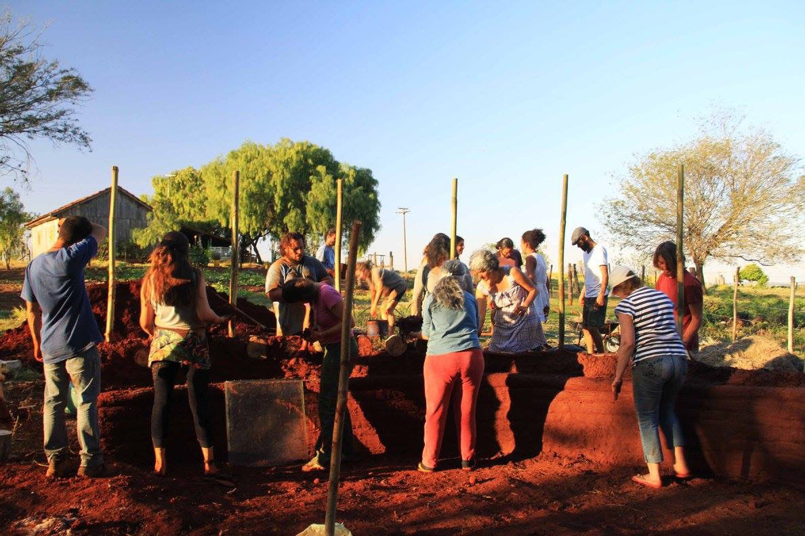
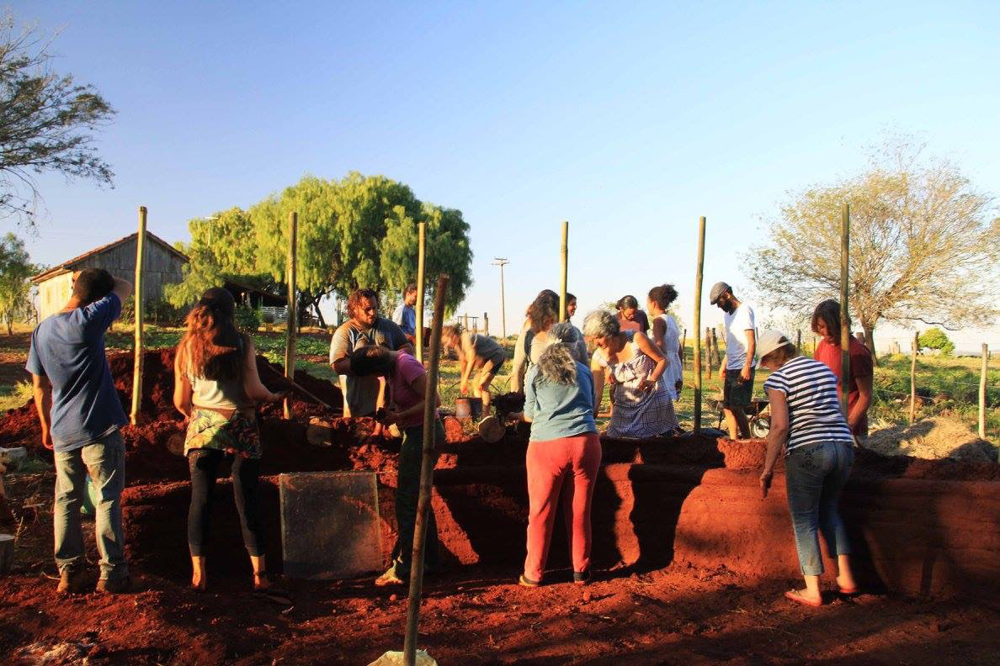

OFICINA: ARQUIBANCADA VERDE DE HIPERADOBE (2018)
Local: Café Com Propósito - Londrina (PR)
Projeto: quatrofatorial Execução: Clã Pé Vermelho Organização: Clã Pé Vermelho
Funções exercidas: Organização, Coordenação e Execução.
Fotografia: Juliana Pereira
CURSO: SANEAMENTO ECOLÓGIO (2018)
Local: Conecte Plante - Londrina ( PR)
Conteúdo: Introdução ao Saneamento Ecológico e Implantação de Tanque de Evapotranspiração
Projeto: Clã Pé Vermelho Organização: Clã Pé Vermelho Execução: Clã Pé Vermelho
Funções exercidas: Aula teórica Saneamento Ecológico, Projeto, Coordenação e Execução
CURSO: BIOCONSTRUÇÃO (2016)
Local: Chácara Particular - Nova América da Colina (PR)
Projeto: quatrofatorial Execução: Clã Pé Vermelho Organização: Clã Pé Vermelho
Funções exercidas: Organização, Coordenação e Execução.
Fotografia: Juliana Pereira

 

RODA DE CONVERSA SOBRE PERMACULTURA E PLANTIO DE 42 MUDAS (2016)
Local: Centro Social Urbano Vila Portuguesa/Buracão (Londrina - PR)
Evento: Dia de conscientização ambiental Ecovida
Coordenação: Laura Troian Gil
Organização: Ecovida
OFICINA: FORNO A LENHA COM BIOCONSTRUÇÃO + HIPERADOBE (2016)
Local: Universidade Estadual de Londrina (PR)
Conteúdo: Construção de Forno à lenha com tijolos cerâmicos e argamassa de terra e banco em hiperadobe
Teoria, Projeto e Coordenação: Laura Troian Gil e Eugênia Marques
Organização: CACAU - Centro Acadêmico de Arquitetura e Urbanismo e Clã Pé Vermelho


OFICINA E VIDEO: COMO EVITAR O USO DE DESCARTÁVEIS (2016)
Local: Ecocentro IPEC - Instituto de Permacultura e Ecovilas do Cerrrado (Pirenópolis, GO)